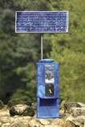

Naiade is Nedap°Øs answer to one of the main problems world wide: biologically polluted drinking water.The Naiade is a solar powered water disinfection device. The used disinfection technology is ultra violet light.
Since for an effective use of UV light in water a minimal clarity is needed, a set of washable and replaceable pre-filter bags of respectively 25 and 10 micron are installed.
After these bags, the water passes a UV lamp, which inactivates bacteria, protozoa and viruses according to the World Health Organisation standards. The whole process does not require any waiting time. Up to 3,000 litres (660 gallons) per day can be treated.
According to various tests in leading institutes such as KIWA, The Netherlands, Unesco-IHE, Atira, India, amongst others disinfection rates of log 3 (99,99%) and more have been realized.
The PV panel provides energy to an electronics unit which controls several safety aspects of the unit. It also charges a battery in the bottom of the unit, thus enabling the use during cloudy days and during the night.
A Naiade can be used anywhere since it operates independent to the grid. It does not need fossil fuel either. All parts can be easily cleaned and re-used. The life time of the UV light is 10,000 hours of use. The unit holds no turning parts. And since it can be installed and operated by anyone, even without any technical education, it already has been installed in over 100 communities world wide: from Indonesia to Brazil and from the Afghanistan mountains to the rainforest of Burkina Faso.
In many African and Chinese school the Naiade has reduced illness rates from over 20% to less than 3%.
The investment of the Naiade technology for providing a man°Øs daily need for safe drinking water is less than 2 per person per year
If you want to know more about the Naiade, please, do visit the websites www.safe-drinkingwater.com (English version) or www.purificationdeleau.com (French version)
See The Detail |